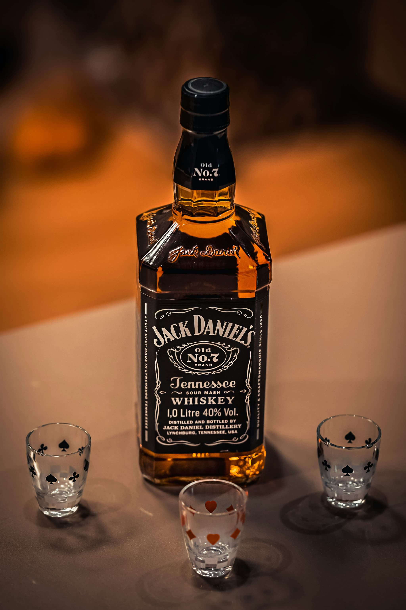
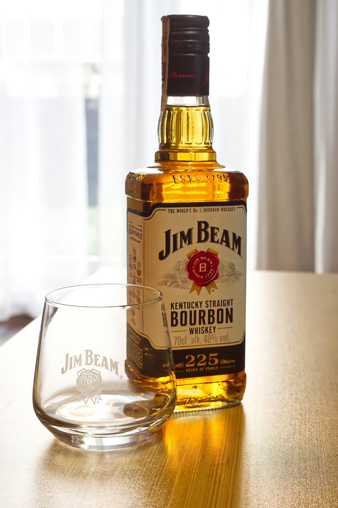
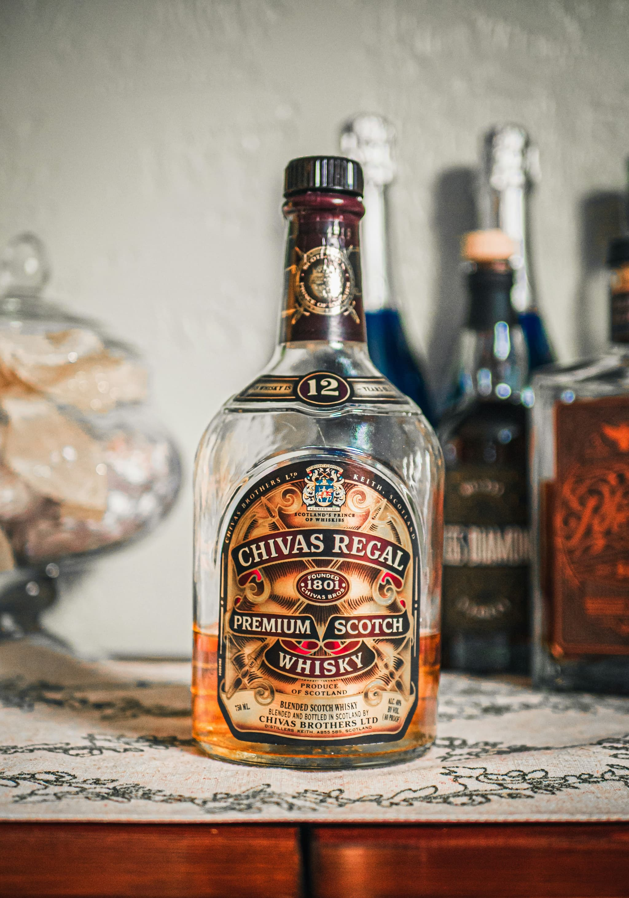
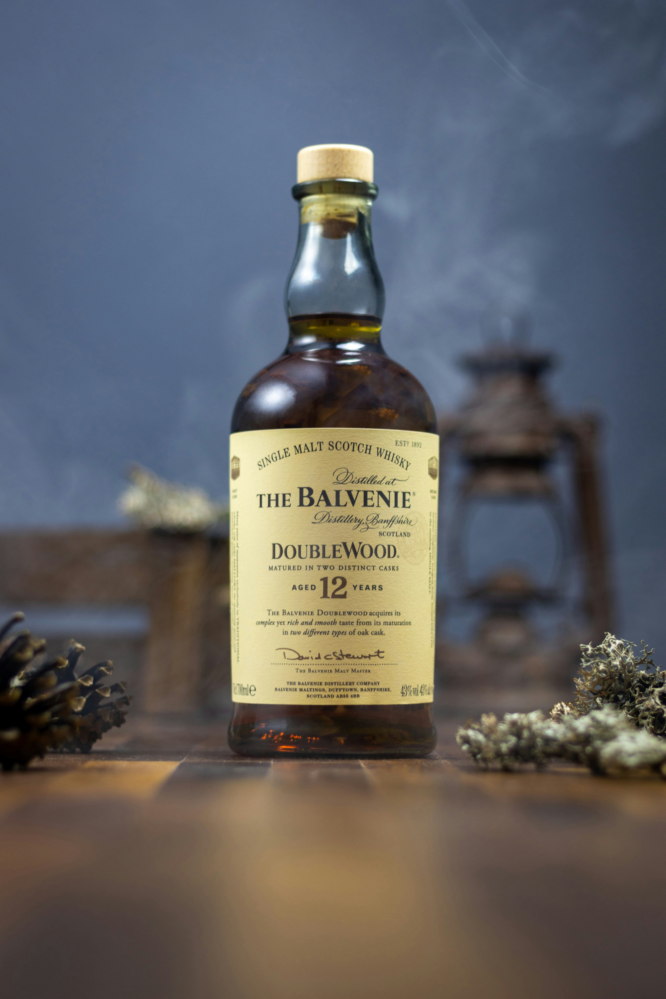
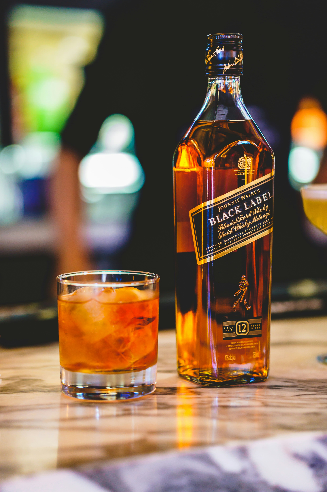
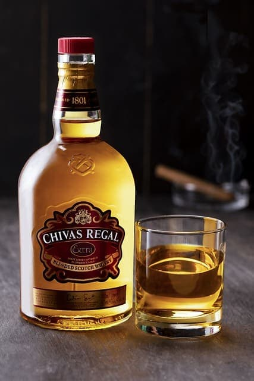
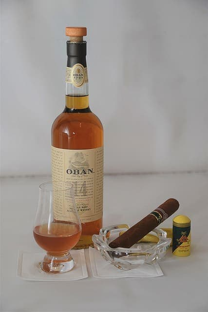

- 
- 
- 
- 
- 
- 
- 

CONCEPT
「Tales of Oak」はどう？
各ボトルに、特定の樽で熟成された独特の風味を詰め込んだウイスキー。例えば、シェリー樽、バーボン樽、ワイン樽など。
それぞれが異なるストーリーと風味を持ち、飲むたびに新しい発見がある。
各樽の歴史や特徴も一緒に紹介して、ウイスキーの深い世界に浸れる体験を提供する。
HISTORY
ウイスキーの起源はスコットランドとアイルランドにあります。スコットランドでは、スコッチウイスキー、アイルランドでは、アイリッシュウイスキーと呼ばれるものが主流です。
スコッチウイスキーは、スコットランドのアレクサンダー3世の時代（14世紀）に始まりました。
彼は、蒸留技術を導入し、ウイスキーの生産を奨励しました。
その後、ウイスキーはスコットランド全土で広まり、各地で独自の製法が発展しました。 アイリッシュウイスキーは、アイルランドのアイリッシュ・ケンタッキー地域で生まれました。
アイリッシュウイスキーは、スコッチウイスキーとは異なり、
ライ麦を主成分とし、軽くてフルーティーな風味が特徴です。
ウイスキーの歴史は、その地域ごとの文化や製法の違いを反映しており、今でも多くのバリエーションが存在します。ウイスキー愛好家にとっては、その歴史を知ることは、さらにその魅力を深く理解する手助けとなります。
彼は、蒸留技術を導入し、ウイスキーの生産を奨励しました。
その後、ウイスキーはスコットランド全土で広まり、各地で独自の製法が発展しました。 アイリッシュウイスキーは、アイルランドのアイリッシュ・ケンタッキー地域で生まれました。
アイリッシュウイスキーは、スコッチウイスキーとは異なり、
ライ麦を主成分とし、軽くてフルーティーな風味が特徴です。
ウイスキーの歴史は、その地域ごとの文化や製法の違いを反映しており、今でも多くのバリエーションが存在します。ウイスキー愛好家にとっては、その歴史を知ることは、さらにその魅力を深く理解する手助けとなります。
ウイスキー飲み方5選
NEWS
- 2024.12.01
- 全国ウイスキーXXXXXXX開催
- 2024.11.11
- ウイスキーXXXXXXX受賞
- 2024.11.06
- アルコールフェスティバルXXXXXXXX参加
- 2024.11.01
- アルコールセミナーXXXXXX開催
- 2024.10.29
- 新人研修制度導入
- 2024.10.01
- ～新卒募集開始～
COMPANY
- 株式会社
- XXXX
- 創 業
- 平成12年7月23日 （2000年7月23日）
- 会社設立
- 平成20年8月1日 （2008年8月1日）
- 代 表 者
- 牛田 梨帆
- 資 本 金
- 500万円
- 事業内容
- 飲料の経営・酒製造・販売
- 従業員数
- 200名
CONTACT
100-0001
東京都品川区北品川0-0-0
コートタワー
月～土 10:00～8:00日 定休日
TEL:03-0000-0000
E-mail:OOOOOOOOOーGmail.com